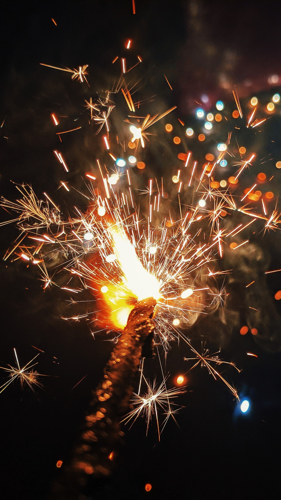

Anniversary
Malaysia is an interesting place to visit even within the range of the whole world. This is due to the multicultural society existing here causing cultural shock and now after 66 years of independence, our culture managed to merge, and we provide a new form of life between different cultures towards the world. The special culture on this page would be the anniversaries that exist in Malaysia.
Chinese


Chinese New Year
One of the biggest anniversaries for the Chinese in Malaysia, The origins of the Chinese New Year are steeped in legend. One legend is that thousands of years ago a monster named Nian (“Year”) would attack villagers at the beginning of each new year. The monster was afraid of loud noises, bright lights, and the color red, so those things were used to chase the beast away. Celebrations to usher out the old year and bring forth the luck and prosperity of the new one, therefore, often include firecrackers, fireworks, and red clothes and decorations. Young people are given money in colorful red envelopes. Read More
Mid-Autumn Festival
Mid-Autumn Festival, also called the Moon Festival celebrated on the 15th day of the 8th month of the lunar calendar. On this day, there would be a full moon at night, Chinese believe that the Moon is at its brightest and fullest size today. It is coinciding with the harvest time in the middle of Autumn. During the Mid-Autumn Festival, people display lanterns of several colors, sizes, and shapes. These lanterns symbolize hope and prosperity guiding people towards a future. Mooncakes, which are pastries filled with bean paste egg yolk, meat, or lotus seed paste have been traditionally enjoyed during this festival. The origins of the Mid-Autumn Festival can be traced back, to the legend of Chang'e the revered Moon goddess, in mythology. Read More
Dragon Boat Festival
According to the legend that is most well-known in contemporary China, the festival honors the passing of Qu Yuan, a poet and minister who lived in the Chu state during the Warring States era of the Zhou dynasty. Qu Yuan drowned himself in the Miluo River out of desperation. It is stated that the admiring locals hurried out in their boats to try to save him or at least bring back his body. According to legend, this is where dragon boat competitions began. When they were unable to locate his body, they threw sticky rice balls into the river in hopes that the fish would consume them rather than Qu Yuan's remains. This is supposedly where zongzi got its start. Read More
Indian
Deepavali
Deepavali, also known as Diwali, is a cherished festival celebrated by Hindus and the Indian diaspora. Known as the "Festival of Lights," it signifies the triumph of light over darkness and good over evil. Homes, streets, and public spaces are adorned with oil lamps and colorful lights, creating a mesmerizing atmosphere.Deepavali commemorates the return of Lord Rama, Sita, and Lakshmana to Ayodhya after defeating the demon king Ravana, as told in the epic Ramayana. It also honors Goddess Lakshmi, symbolizing wealth and prosperity. Deepavali is a time for family gatherings, feasting, exchanging gifts, and spreading joy, fostering a sense of unity and renewal within communities. Read More

Thaipusam
Thaipusam is a vibrant Hindu festival celebrated predominantly by the Tamil community. This annual event, which typically falls in January or February, honors Lord Murugan, the Hindu god of war and victory. Devotees express their devotion and seek blessings through unique acts of penance, including piercing their bodies with hooks and carrying heavy kavadis (ornate structures). The festival is a colorful and spiritual spectacle, drawing both local and international participants and spectators. Thaipusam underscores the enduring spirit of faith, self-sacrifice, and communal unity, making it a captivating and spiritually enriching experience. Read More
Pongal
Pongal is a significant harvest festival celebrated with great fervor by Tamil Hindus in Southern India, typically in January. This four-day extravaganza marks the bountiful harvest season, expressing gratitude to the sun god, Surya, and the farm animals that contribute to agriculture. The highlight of Pongal is the preparation of a special dish called "Pongal," made from freshly harvested rice, jaggery, and other ingredients. Traditional music, dance, and colorful kolam (rangoli) decorations add to the festivities. Pongal embodies the spirit of thanksgiving, unity, and the age-old agrarian traditions that have sustained Tamil culture for generations. Read More
Malay

Hari Raya Aidilfitri
Hari Raya Aidilfitri, widely known as Eid al-Fitr, is a joyous and sacred celebration in the Malay culture. It marks the end of Ramadan, the Islamic holy month of fasting and spiritual reflection. Families come together to break their fast, offer prayers at the mosque, and exchange heartfelt greetings. Homes are adorned with colorful decorations, and the custom of giving and receiving gifts is cherished. This festival embodies the spirit of forgiveness, gratitude, and unity among Muslims, symbolizing the victory of spiritual devotion over worldly desires. Read More
Hari Raya Aidiladha
Hari Raya Aidiladha, also known as Eid al-Adha or the Festival of Sacrifice, holds a special place in Malay culture. It commemorates the willingness of Prophet Ibrahim (Abraham) to sacrifice his son Isma'il (Ishmael) as an act of obedience to God. Muslims across Malaysia perform the Qurban ritual by sacrificing animals and distributing the meat to the less fortunate, reinforcing the values of charity and compassion. It is a time of spiritual reflection, prayer, and strengthening community bonds. Read More


Maulidur Rasul
Maulidur Rasul, or Mawlid al-Nabi, is a significant celebration in the Malay culture that honors the birth of Prophet Muhammad. It is observed with religious fervor and includes special lectures, processions, and gatherings where the life and teachings of the Prophet are commemorated. Devotees recite poems and offer prayers, emphasizing the importance of following the Prophet's example of compassion, kindness, and righteousness. The festival fosters a sense of spiritual renewal and serves as a reminder of the profound impact of Prophet Muhammad's life on the Malay Muslim community. Read More